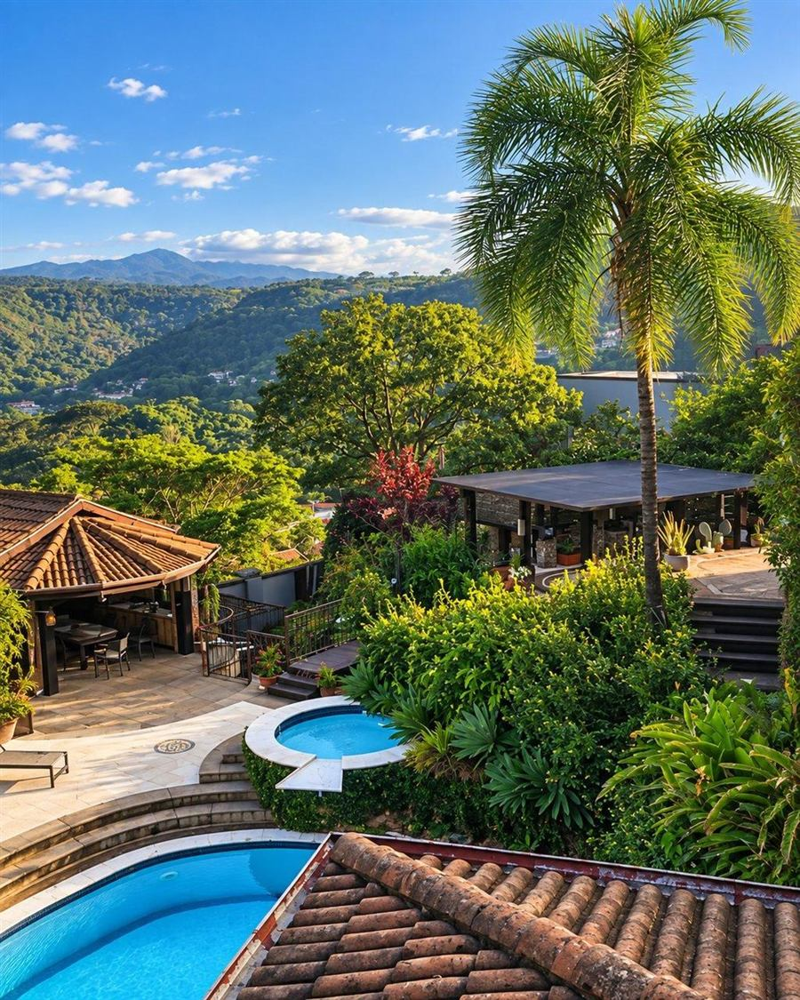
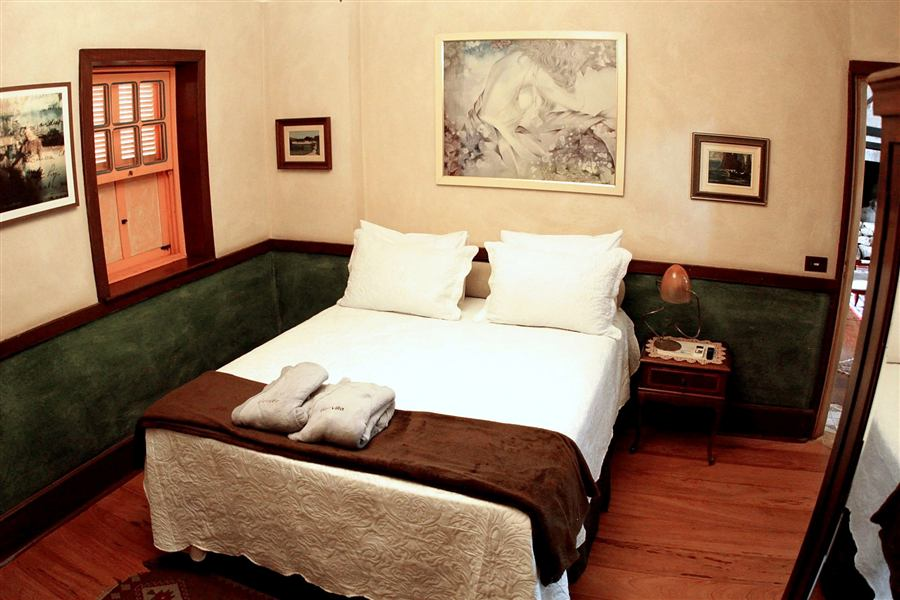
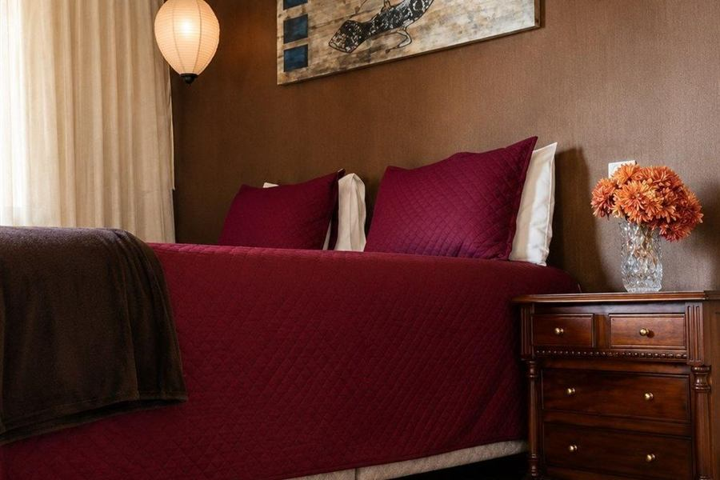
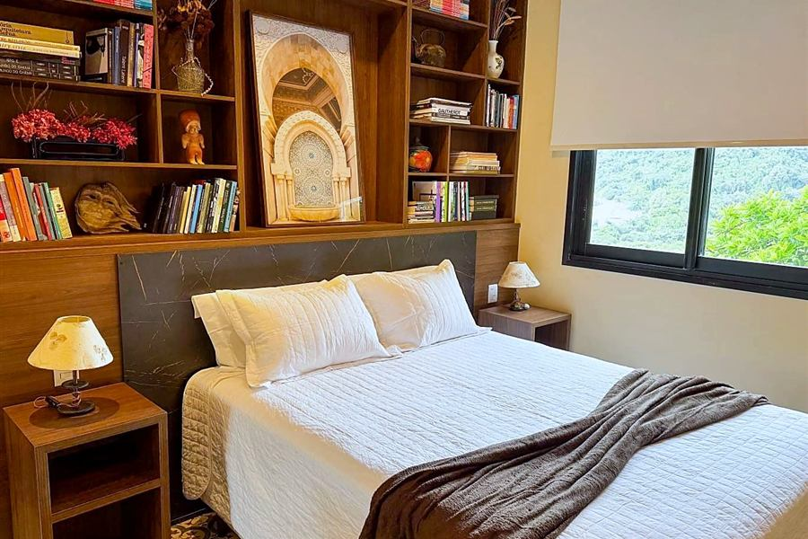
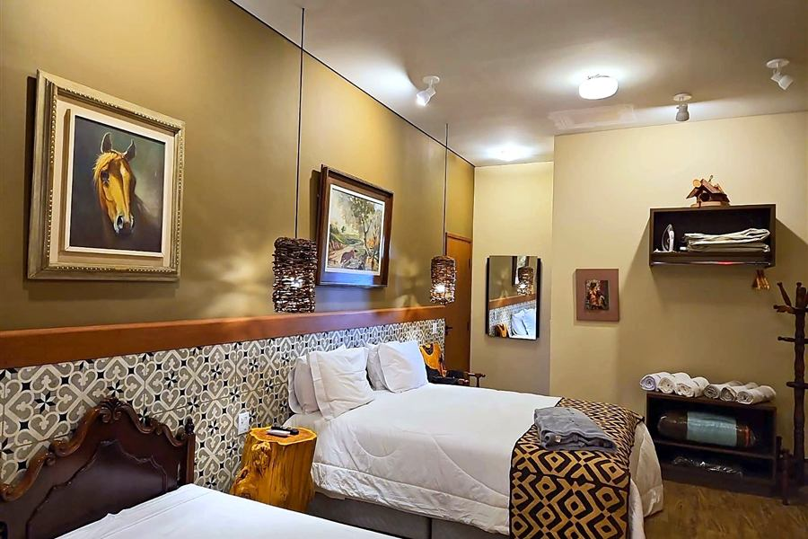
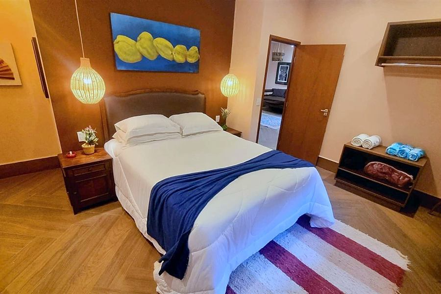
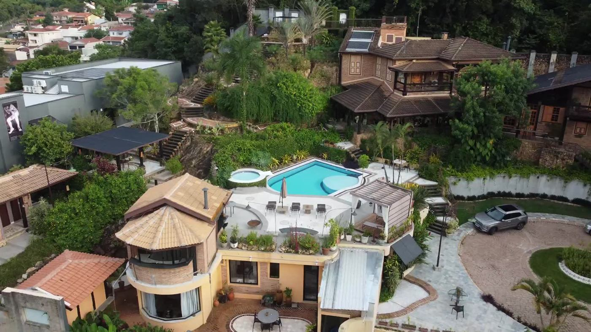
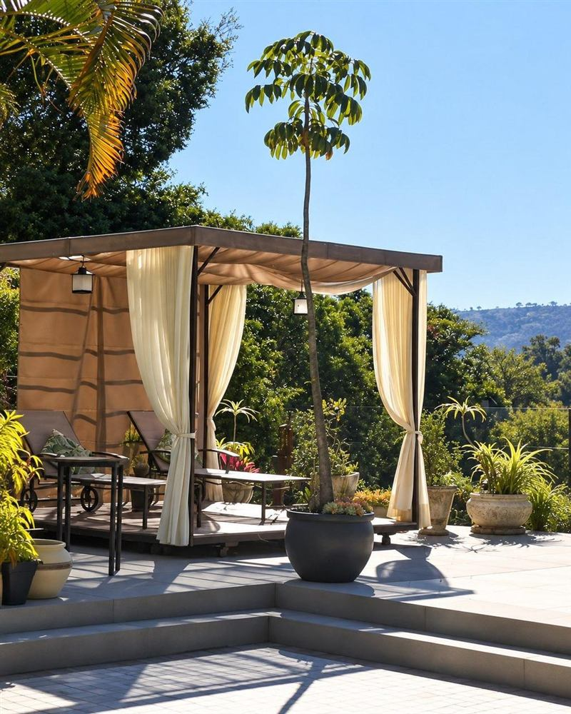

Cinco casas, cada uma com um lugar do mundo dentro.
Toscana, Bali, Marrocos, África e Shanghai, montadas com móveis, obras e objetos que os anfitriões reuniram em décadas de viagem. Tudo numa chácara particular de sete mil metros quadrados, com piscina, sauna e mirante para a serra.

Não somos hotel nem pousada. São casas independentes, com privacidade, numa rua sem saída no alto do bairro.
- 7.000 m²
- de chácara particular
- 870 m
- de altitude
- 5 casas
- de 2 a 6 hóspedes
- Café
- cesta completa no check-in
Cada casa tem sua própria coleção de arte

Casa ToscanaAté 5 hóspedes
Inspirada nos vilarejos italianos: cores quentes, materiais naturais e peças com marcas do tempo. Tem lareira e mezanino, e é a escolha certa para famílias pequenas ou dois casais.

Casa BaliAté 4 hóspedes
Leve e orgânica, pensada em torno da ideia balinesa de ritual como cuidado. Dossel sobre a cama, trabalho manual em cada detalhe e um silêncio que ajuda a dormir fundo.

Casa MarrocosAté 2 hóspedes
A menor e mais íntima. Padrões geométricos, cores intensas e o jogo de luz e sombra dos pátios marroquinos. Feita para casal.

Casa ÁfricaAté 5 hóspedes
Matéria, textura e obras que falam de identidade e pertencimento. Uma casa intensa e acolhedora, com espaço para família ou amigos.

Casa ShanghaiAté 6 hóspedes
Linhas limpas e contrastes sutis, entre a cidade contemporânea e as tradições orientais. A maior das cinco, boa para grupos que querem calma.
Parte do acervo das casas está à venda. Cada casa tem um guia de visitação que conta a origem das peças.
O que é de todos os hóspedes
Além da sua casa, você usa as áreas comuns da chácara. Algumas são compartilhadas com outros hóspedes e, às vezes, com os anfitriões.

Água
Piscina com cascata, jacuzzi, sauna úmida e duchas circular e escocesa.
Mirante
Vista aberta para a Serra da Mantiqueira e para Águas da Prata, o lugar preferido para o fim de tarde.
Jardins e pomares
Bosque com redes, bangalô e caramanchão. Fruta madura no pé pode ser colhida.
Fogo e mesa
Lareiras externas ao estilo pampeano, cozinha gourmet com churrasqueira e mini academia.
Qual casa combina com a sua viagem?
Responda seis perguntas e veja a casa e o pacote que mais combinam com você. No final, as respostas vão para o WhatsApp da Gloc Villa já escritas.
A reserva só é confirmada depois da conversa com os anfitriões. Nada é enviado até você tocar no botão.
Dias fixos, preço por casa e não por pessoa
Final de semana
Sexta a domingo, 2 noites. Check-in sempre na sexta.
Domingo e quarta grátis
Domingo a quarta, 3 noites, com condição especial no meio da semana.
Semana
Sexta a quinta, 6 noites.
10 dias
Sexta ao domingo da semana seguinte, 9 noites.
Natal na serra
23 a 27 de dezembro. Decoração natalina na casa, cesta com panetone artesanal e espumante, e uma reprodução de obra do Instituto Gloc de lembrança.
Réveillon na serra
30 de dezembro a 4 de janeiro, 5 noites.
Todos os pacotes incluem a cesta de café da manhã no check-in. O valor muda conforme a casa e o número de hóspedes, e as datas estão sujeitas à disponibilidade.

Mais que hospedagem
Na mesma chácara funcionam o Instituto Gloc, dedicado à arte contemporânea e principalmente à fotografia, e a Casa Ateliê, espaço de criação de um dos anfitriões. Os murais e galerias ao ar livre recebem exposições que mudam de tempos em tempos, e o ateliê pode ser visitado com agendamento.
Águas da Prata é uma estância hidromineral pequena, na encosta da Mantiqueira e na divisa com Minas Gerais. Dá para provar cafés especiais nas fazendas da serra, conhecer vinícolas, fazer trilhas, andar pelo calçadão das fontes ou simplesmente não sair da Gloc.
Check-in a partir das 8h e checkout até as 15h, para o dia de chegada e o de partida renderem de verdade.